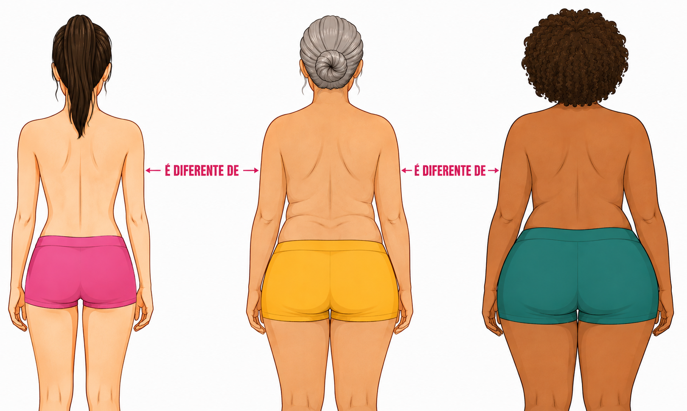
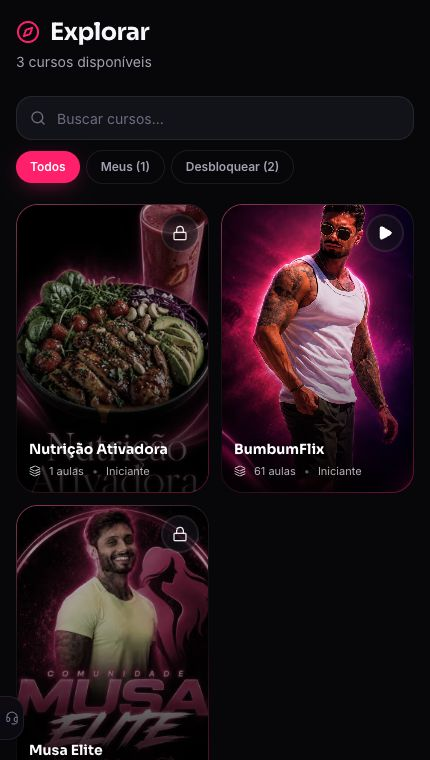
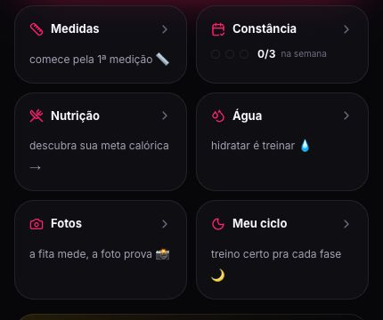

Seu acesso está sendo liberado — não feche esta página
Compra do BumbumFlix aprovada
Antes de você acessar o seu BumbumFlix, eu quero te entregar o nosso aplicativo completo com treino personalizado, nutricionista pra cuidar da sua dieta e tudo para garantir a sua melhor versão!
MOCKUP DO CLUBE DAS MUSASCelular flutuante — substituir pela arte final
Veja o que vai ser liberado
A minha equipe já está liberando o seu BumbumFlix. Em poucos minutos, você vai ter o método certo pra ativar o glúteo e começar a construir um bumbum mais firme, redondo e empinado.
Mas fica comigo só mais 3 minutos. Porque você não entrou aqui só pra assistir aula, né? Você entrou porque quer vestir a calça e sentir ela preenchida atrás. Quer usar uma legging sem ficar procurando ângulo. Quer olhar uma foto de costas e pensar: “Caramba… esse bumbum é meu.”
Só que o método certo ainda precisa caber no corpo certo.
E é justamente aqui que muita mulher acaba tendo um resultado pela metade.
A Sequência Ativadora mostra os exercícios certos. Só que o formato atual do seu glúteo, o seu nível, a sua rotina, os equipamentos que você tem e o restante do seu corpo continuam sendo só SEUS.

Cada corpo e cada rotina pedem uma estratégia diferente.
Tem mulher que precisa preencher mais a lateral pra criar um visual arredondado. Tem mulher que precisa construir a parte de cima. Tem mulher que precisa secar a barriga sem perder o bumbum. E tem a mulher que só consegue treinar 30 minutos antes dos filhos acordarem.
É por isso que existe o treino personalizado. Não pra fazer você treinar mais — mas pra fazer o tempo que você já tem trabalhar exatamente no corpo que você quer.
Porque eu sei o que ainda passa pela sua cabeça quando você se olha no espelho:
“Meu bumbum parece quadrado ou achatado” — e você não sabe quais regiões precisa desenvolver pra deixar ele mais redondo.
“Minha barriga não acompanha” — o glúteo até melhora, mas a cintura continua sem o desenho que você queria.
“Eu não tenho tempo pra viver na academia” — e uma ficha enorme simplesmente não cabe na sua rotina.
“Eu tento comer saudável, mas não sei se é o suficiente” — e fica com medo de secar e murchar junto ou comer demais e aumentar a barriga.
E junto com isso vêm aquelas dúvidas que cansam antes mesmo do treino começar:
“Qual exercício serve pro formato do MEU bumbum?”
“Se eu só tenho meia hora, o que realmente precisa entrar no treino?”
“Como eu seco a barriga sem perder o volume que quero construir?”
“Será que eu tô evoluindo ou só tô me acostumando com a minha imagem?”
O problema nunca foi falta de força de vontade. O problema é tentar tomar sozinha todas as decisões que um treinador e um nutricionista deveriam tomar por você — e ainda achar que precisa acertar tudo de primeira.
Então deixa eu te fazer uma proposta.
Eu quero pegar você pela MÃO e colocar no seu celular o tipo de acompanhamento que normalmente exigiria treinador, nutricionista, planilha, conversa no WhatsApp e um monte de coisa espalhada.
Dentro do Clube das Musas desbloqueado, você recebe um treino montado pro formato do seu corpo, pro seu nível, pros equipamentos que tem e pro tempo real que cabe na sua vida.
E eu não vou cuidar do seu treino e deixar justamente a comida no chute. O nosso nutricionista calcula proteína, calorias, porções e refeições pro seu objetivo — usando alimentos que você gosta e sem transformar a sua rotina numa prisão.
O aplicativo é o lugar onde tudo chega organizado. Mas o que você está levando de verdade é direção individual pra transformar o corpo inteiro.
Agora deixa eu te mostrar onde o seu plano vai ganhar vida.
Essas são telas reais do Clube das Musas. O aplicativo não substitui o acompanhamento — ele coloca o acompanhamento na sua mão, pronto pra usar.
Veja as 3 telas reais abaixo
Você sabe o que fazer hojeSeu treino e o próximo passo na tela

Tudo que cuida do seu corpoBumbumFlix, treino e dieta personalizada

A prova de que está funcionandoMedidas, constância, fotos e ciclo
O Clube das Musas cuida da sua transformação em 3 pilares
BANNER: TREINO PERSONALIZADOSubstituir pela arte final deste pilar
1
Pilar 1
Um treino feito pro formato do SEU corpo
Antes de montar o plano, a gente olha pro formato atual do seu glúteo, pro seu nível, pras regiões que quer desenvolver, pros equipamentos disponíveis e pro tempo que realmente cabe na sua rotina.
Se o bumbum parece quadrado, o plano pode priorizar as porções que ajudam a construir um visual mais arredondado. Se ele é achatado, a estratégia busca volume e projeção. Se já tem volume, a gente trabalha firmeza, desenho e proporção com o restante do corpo.
Não é sobre prometer mudar a sua estrutura óssea. É sobre escolher os estímulos que mais valorizam o corpo que você tem e aproximam você do visual que deseja.
BANNER: DIETA PERSONALIZADASubstituir pela arte final deste pilar
2
Pilar 2
Uma dieta personalizada pra construir sem estufar e secar sem murchar
Pensa comigo: o treino dá o estímulo. A comida entrega o material. Se falta proteína, o bumbum não constrói tudo que poderia. Se sobra caloria, a barriga não vai embora. Se você corta demais, pode perder justamente o volume que queria empinar.
Por isso o nutricionista da minha equipe calcula proteína, calorias, porções e refeições pro SEU objetivo. Com comida de verdade, substituições e espaço pra vida acontecer — sem dieta copiada, sem passar fome e sem depender do achômetro.
BANNER: PLANO QUE ACOMPANHASubstituir pela arte final deste pilar
3
Pilar 3 — o acompanhamento
Um plano que acompanha a mulher que você vai se tornando
O plano que funciona hoje pode precisar mudar quando você estiver mais forte, mais seca ou com outra rotina. Por isso, a cada 30 dias, a evolução é observada e treino e alimentação podem ser recalibrados.
Check-ins, medidas, fotos e constância mostram o que mudou. E quando a dúvida ou a vontade de desistir aparecer, você não fica abandonada com uma ficha na mão tentando decidir o próximo passo.
“Mas Murilo, como vocês vão saber o que EU preciso?”
1
Você garante a sua vaga
O Clube é desbloqueado na mesma conta em que o seu BumbumFlix está sendo liberado.
2
A gente para pra te ouvir
Você conta sobre corpo, formato do glúteo, rotina, equipamentos, limites, alimentos, restrições e objetivo.
3
O plano com o seu nome aparece
Em vez de uma ficha genérica, treino e alimentação chegam organizados dentro do aplicativo pra você executar sem chute.
4
O plano evolui com você
A cada mês, seus registros ajudam a mostrar o que está respondendo e o que precisa de ajuste.
E não importa se a sua rotina é perfeita. Porque a de ninguém é.
Se você tem 30 minutos antes do trabalho, o treino precisa caber nesses 30 minutos. Se treina em casa, ele usa o espaço e os equipamentos que você tem. Se vai pra academia, você entra sabendo exatamente o que fazer e sai sem passar duas horas rodando aparelho.
Se gosta de arroz, pão ou um doce de vez em quando, a alimentação precisa conversar com a vida real. Porque um plano “perfeito” que você não consegue seguir vale menos do que um plano simples feito pra você.
Personalização é isso: parar de obrigar a sua vida a caber no plano e fazer o plano caber na sua vida.
Eu não trouxe qualquer nutricionista pra cuidar de você
Eu conduzo a estratégia de treino e o Tiago Gimenez monta a sua Nutrição Ativadora. Além de ser meu amigo e fazer parte do time, foi ele que me preparou quando eu competi. Então eu posso te falar com tranquilidade: quando o assunto é alimentação pra mudar o corpo, é exatamente o profissional que eu gostaria de ter do meu lado.
Antes de eu falar de preço, deixa eu te perguntar:
Quanto vale ter um treino que olha pro formato do SEU bumbum e escolhe onde construir volume, firmeza e proporção?
Quanto vale saber exatamente o que fazer nos 30 ou 45 minutos que cabem na sua rotina — sem exercício inútil e sem viver na academia?
Quanto vale comer algo gostoso sem culpa, porque a sua proteína, as suas calorias e as suas porções já foram pensadas pro corpo que você quer?
Quanto vale secar a barriga sem ver o bumbum murchar e construir massa sem sentir que a cintura foi embora junto?
E quanto vale, daqui 90 dias, comparar as suas fotos e pensar: “Caramba… finalmente meu corpo tá respondendo”?
O aplicativo só coloca tudo isso na sua mão. O valor de verdade é ter um treinador e um nutricionista tirando você do achômetro.
Uma consultoria que olha treino e alimentação desse jeito pode cobrar R$ 1.500, R$ 2.000 e ainda não entregar metade. Só o Musa Elite já custou R$ 897 pelos 3 meses quando eu abri vagas no Instagram — e elas esgotaram em menos de 24 horas.
Mas hoje eu não quero te vender treino de um lado, dieta do outro e um aplicativo por cima. Quero te entregar o Clube das Musas desbloqueado: uma experiência só, com o seu acompanhamento inteiro lá dentro.
CLUBE DESBLOQUEADO — SÓ AGORA
Acompanhamentos separados: mais de R$ 1.500 Acesso normal do Musa Elite: R$ 897
Sua condição exclusiva de aluna nova:
De R$ 437
− Cashback de R$ 147 do seu BumbumFlix
12x deR$ 30
ou R$ 290 à vista
É menos que o preço de uma pizza por mês — por um plano feito pro seu corpo.
Pra ficar bem claro tudo que eu vou colocar na sua mão:
Treino personalizado do Musa Elite por 3 meses — feito pro formato do seu corpo, seu nível, seus equipamentos, sua rotina e seu objetivo.
Dieta personalizada por 3 meses — com proteína, calorias, cardápio, porções e substituições calculadas pelo nutricionista da equipe.
Recalibrações mensais de treino e alimentação conforme o corpo evolui e o objetivo muda.
Acesso permanente ao aplicativo Clube das Musas e às ferramentas básicas de evolução.
BumbumFlix completo com 61 aulas, 8 módulos e a Sequência Ativadora.
Check-in, medidas, constância, nutrição, água, fotos e ciclo reunidos no painel de evolução.
30 dias de garantia incondicional para entrar sem risco.
Você entra no Clube. E o risco continua todo comigo.
Preenche os diagnósticos, vê o plano com o seu nome tomando forma e testa essa experiência por 30 dias inteiros. Treina, organiza a alimentação e sente se finalmente ficou mais fácil saber o que fazer.
Se você sentir que não valeu cada centavo, chama a minha equipe e eu devolvo o investimento. Sem pergunta, sem burocracia e sem perder o BumbumFlix que você já comprou.
Porque aplicativo bonito não muda corpo. Direção, constância e plano certo mudam.
VanessaResultado de aluna do método
A Vanessa não precisava de mais informação. Ela precisava saber como secar sem jogar fora o bumbum que tinha construído. Quando treino, alimentação e constância apontam pro mesmo objetivo, o resultado deixa de morar na promessa e começa a aparecer no corpo.
Antes
Depois
Resultados individuais e variam de pessoa para pessoa.
Clube para sempre · Acompanhamentos personalizados por 3 meses
20acessos restantes nessa condição
Eu não consigo montar plano individual pra um número infinito de mulheres sem perder justamente o cuidado que faz isso funcionar. Por isso liberei só 20 acessos com os acompanhamentos e o cashback desta página.
Ainda com alguma dúvida?
O acesso ao Clube das Musas acaba?
Não. O aplicativo, o BumbumFlix e as ferramentas básicas incluídas nesta oferta ficam disponíveis para você de forma permanente.
Por quanto tempo duram os planos personalizados?
O treino personalizado e a dieta montada pelo nutricionista acompanham você durante 3 meses, com programa de 12 semanas e ajustes mensais.
O treino e a dieta são produtos separados?
Não nesta oferta. O que você está levando é o Clube das Musas desbloqueado. O treino personalizado e a dieta são partes do mesmo acompanhamento dentro do aplicativo e trabalham pro mesmo objetivo durante 3 meses.
O Musa+ está incluído?
Não. O Musa+ é uma assinatura separada e suas ferramentas premium não fazem parte desta oferta. Tudo que está listado no stack acima está incluído.
Preciso baixar o aplicativo?
Você pode instalar o Clube das Musas no celular ou acessar pelo navegador. A mesma conta mantém seus programas e registros.
Quando os planos são liberados?
Após a compra, você recebe os diagnósticos. Depois de preenchê-los, os planos individuais são preparados e liberados na sua conta.
E se eu não gostar?
Você tem 30 dias de garantia incondicional. É só falar com a equipe para receber o investimento de volta.
Você já deu o primeiro passo pra mudar o seu bumbum. Agora pode parar de tentar mudar o resto sozinha.
Abre o aplicativo, aperta play e deixa eu e o meu time cuidarmos do que vem depois: o treino certo, a alimentação certa e a prova de que, dia após dia, você tá ficando mais perto da mulher que quer ver no espelho.